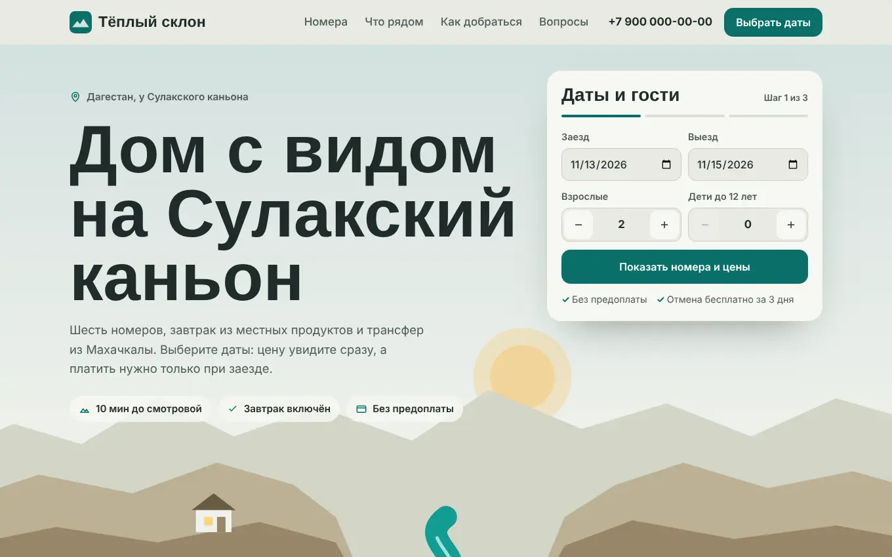
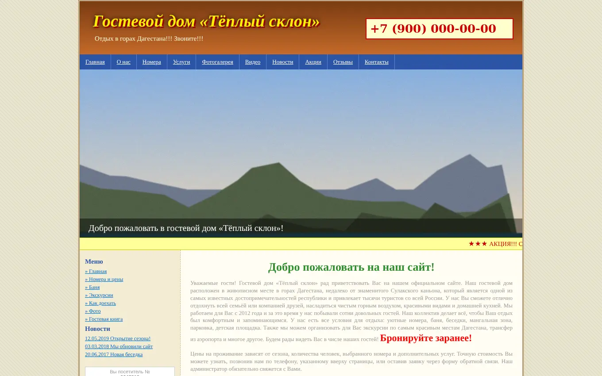

Гостевой дом «Тёплый склон»: было → стало
Типичный сайт гостевого дома: красивые горы, но цену не узнать без звонка, форма на 10 полей, а на телефоне страница уезжает вбок. Переделал так, чтобы гость за минуту видел цену за свои даты и бронировал без предоплаты и звонков.
Бизнес вымышленный. Старую версию я собрал сам из ошибок, которые часто встречаются на сайтах малого бизнеса, чтобы показать разбор на понятном примере. Все цифры ниже измерены на этих двух страницах.


Потяните ползунок: слева старый сайт, справа новый
Цифры до и после
Замерено автоматической проверкой в браузере на экране компьютера (1360 px) и телефона (390 px).
| Что проверял | Было | Стало |
|---|---|---|
| Вес страницы (без шрифтов) | 3,2 МБ | ≈ 55 КБ |
| Страница шире экрана телефона | на 616 px | нет |
| Кнопки и ссылки мельче 44 px (по ним промахиваются пальцем) | 32 из 33 | 0 |
| Текст с плохим контрастом | 12 блоков | 0 |
| Размер основного текста | 13 px | 17–18 px |
| Поля в форме заявки | 10, e-mail обязателен | 2: имя и телефон |
| Цены на сайте | «уточняйте по телефону» | видны, итог за даты считается сам |
| Телефон | картинка, нельзя нажать | нажал и звонишь |
| Кнопка бронирования на первом экране | нет | есть |
| Галочка согласия по умолчанию | стоит, вместе с рассылкой | нет, согласие отдельно |
| Шрифтов на странице | 3 | 2 |
| Мигающий и бегущий текст | 2 | 0 |
Для сравнения: в реальном проекте вместо иллюстраций будут настоящие фото номеров. Сжатые в WebP, они добавят примерно 100–200 КБ каждое, и страница всё равно останется в разы легче старой.
Что изменил и почему
Первый экран
- Было
- Карусель из трёх фото, подпись «Добро пожаловать» и ни одной кнопки.
- Мешало
- За первые секунды непонятно, чем это место лучше других и сколько стоит. Карусель листается сама, человек не успевает прочитать.
- Стало
- Заголовок с главным преимуществом (вид на каньон), три факта и форма дат сразу рядом.
Цены
- Было
- У всех номеров «Цена: уточняйте по телефону».
- Мешало
- Не все хотят звонить ради цены, особенно вечером. Проще открыть соседний сайт, где цена видна.
- Стало
- Цена за ночь в каждой карточке, отдельно выходные. После выбора дат итог считается сам, с трансфером или без.
Бронирование
- Было
- Одна форма на 10 полей, обязательный e-mail, кнопка «Отправить».
- Мешало
- Длинная форма пугает, а «Отправить» не говорит, что будет дальше.
- Стало
- Три коротких шага: даты и гости → номер и цена → имя и телефон. Неподходящие номера отключаются сами. В конце понятно, кто и когда перезвонит.
Согласие на данные
- Было
- Галочка уже стоит, а в одном пункте и обработка данных, и рекламная рассылка.
- Мешало
- С 1 сентября 2025 года согласие на обработку данных должно быть отдельным, а галочки по умолчанию запрещены. Это риск штрафа для владельца.
- Стало
- Пустая галочка со ссылкой на отдельный текст согласия, политика в подвале, рассылку убрал.
Телефон и мобильная версия
- Было
- Сайт шириной 1000 px, телефон вставлен картинкой, ссылки по 15 px в высоту.
- Мешало
- Большинство ищет жильё с телефона. Там страницу приходится двигать пальцем, а номер переписывать вручную.
- Стало
- Вёрстка под любой экран, кнопки от 44 px, номер нажимается, внизу всегда есть «Выбрать даты» и звонок.
Скорость
- Было
- 3,2 МБ несжатых фото, слайдер грузит всё сразу.
- Мешало
- В горах и в дороге интернет слабый. Тяжёлая страница грузится долго, человек закрывает вкладку.
- Стало
- Иллюстрации нарисованы кодом и почти ничего не весят. Страница с текстами и формой ≈ 55 КБ.
Доверие
- Было
- Счётчик посетителей, «новости» 2017 года, стена текста «мы рады Вас приветствовать».
- Мешало
- Старые даты выглядят как заброшенный сайт: работает ли вообще гостевой дом?
- Стало
- Схема «что рядом», как добраться, как проходит заезд, ответы на частые вопросы, отзывы и реквизиты в подвале.
Внешний вид
- Было
- 3 шрифта, 6 несвязанных цветов, мигающее «Бронируйте заранее!» и бегущая строка.
- Мешало
- Мигание отвлекает и выглядит дёшево, глазу не за что зацепиться.
- Стало
- Палитра из цветов самого каньона: тёплый камень и бирюза реки. Два шрифта, одна главная кнопка, спокойная анимация реки, которая выключается, если в телефоне включено «уменьшить движение». Есть тёмная тема.
Посмотреть вживую
Обе версии работают прямо здесь: можно прокрутить и пройти бронирование.
Ваш сайт не приносит заявок?
Проверю его так же: измерю, что мешает людям с телефона, найду, где теряются заявки, и предложу, что исправить или переделать.